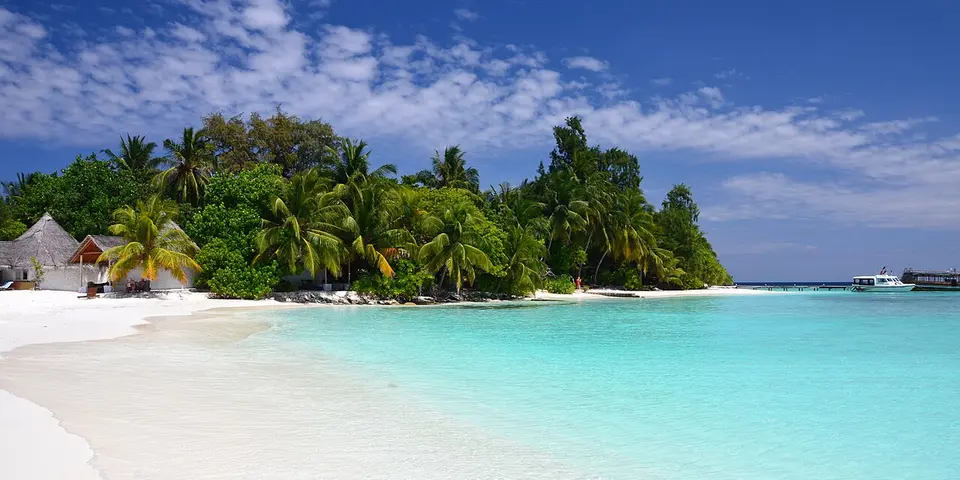

South Asia
Maldives on a budget
Not just luxury resorts: local islands have cheap guesthouses, public ferries and the same turquoise water, making the Maldives possible on a budget.
Photo: Gzzz, CC BY-SA 4.0, via Wikimedia Commons
_8.JPG){kind=link}
Classic route
Malé, then 2 or 3 local islands by public ferry. 10 days.
Before you go
Flights to Maafushi: Skyscanner · Kiwi.com · Google Flights
Hostels and guesthouses in Maafushi · Thoddoo · Ukulhas · Dhigurah
Tours and tickets: Maafushi · Thoddoo
Mobile data: Maldives eSIM
Travel insurance: SafetyWing
How much 8 places in Maldives cost
Daily budgets per person in US dollars: a hostel dorm or simple guesthouse, local food, local transport and the usual entry fees.
-
Maafushi
A lively local island with budget guesthouses, a bikini beach and day trips to sandbanks and snorkel reefs.
Bed $40 · Food $15 · Getting around $5 · Extras $25
Budget tip: Take the public ferry from Malé instead of a speedboat. Book snorkel trips locally and compare prices between guesthouses.
$85per day -
Thoddoo
Farm fields of watermelon and papaya, friendly village life and a quiet reef beach with turtles close to shore.
Bed $40 · Food $15 · Getting around $8 · Extras $15
Budget tip: Alcohol isn't served on local islands, so budget for a day trip to a resort if you want a drink. Snorkel from the beach for free.
$78per day -
Ukulhas
A small local island in Ari Atoll with a clean bikini beach, cheap guesthouses and boat trips to swim with manta rays and whale sharks.
Bed $45 · Food $15 · Getting around $8 · Extras $25
Budget tip: Use the public ferry or shared speedboat from Malé. Local islands are dry, so budget accordingly.
$93per day -
Dhigurah
A long sandy island in South Ari Atoll where whale sharks are seen year-round and manta rays drift past nearby reefs.
Bed $45 · Food $15 · Getting around $10 · Extras $30
Budget tip: Snorkel trips to see whale sharks are much cheaper booked on the island than from Malé or a resort.
$100per day -
Malé
Dense capital island of colourful buildings, the coral-stone Old Friday Mosque, a lively fish market and ferries to the local islands.
Bed $35 · Food $12 · Getting around $3 · Extras $5
Budget tip: Stay in Hulhumalé near the airport for cheaper guesthouses. Public ferries and the bridge buses cost a fraction of speedboat transfers.
$55per day -
Fulidhoo
Nurse sharks and stingrays glide into the shallows by the harbor every evening on this tiny, friendly island with cheap guesthouses.
Bed $40 · Food $15 · Getting around $8 · Extras $25
Budget tip: The public ferry from Malé runs only on some days, so check the schedule and plan around it.
$88per day -
Dhiffushi
Small local island in North Malé Atoll with a long bikini beach, sandbank picnics and surf breaks close to shore.
Bed $45 · Food $15 · Getting around $8 · Extras $25
Budget tip: The public ferry is cheapest but slow; speedboats save time. Alcohol is not sold on local islands, so budget for resort day trips if you want a drink.
$93per day -
Rasdhoo
Local island on its own atoll ring, known for hammerhead shark dives at dawn, manta rays and turtles on the house reef.
Bed $45 · Food $15 · Getting around $8 · Extras $30
Budget tip: Public ferries from Malé run on set days, so check the schedule. Book dive packages for multiple days to cut the cost per dive.
$98per day
Know before you go
Maldives on a budget: the basics
Currency
$1 = 15.46 MVR
Maldivian rufiyaa
| Dollars to MVR | MVR to dollars | ||
|---|---|---|---|
| $1 | 15.46 MVR | 10 MVR | $0.647 |
| $5 | 77.28 MVR | 50 MVR | $3.23 |
| $10 | 155 MVR | 100 MVR | $6.47 |
| $20 | 309 MVR | 500 MVR | $32.35 |
| $50 | 773 MVR | 1,000 MVR | $64.70 |
| $100 | 1,546 MVR | 5,000 MVR | $323 |
A typical day here (about $93) is roughly 1,400 MVR.
Mid-market rate on 2026-10-05. Cash machines and exchange desks pay a little less.
Getting around
Public ferries between local islands are cheap but infrequent, while speedboats are faster and cost more; seaplanes are expensive. In Malé, short taxi rides are the norm, since ride-hailing apps are not widely used. Check ferry timetables and book speedboat transfers ahead with your guesthouse.
Where to sleep
Guesthouses on local islands are far cheaper than resorts; book ahead in the dry season.
What to eat
- Mas huni: shredded tuna with coconut, chili and onion
- Garudhiya: clear tuna broth with rice and lime
- Hedhikaa: savory short eats served with tea
- Roshi: thin flatbread eaten with tuna or curry
Money
US dollars are widely accepted alongside rufiyaa, cards work at most guesthouses, and ATMs are mostly in Malé. A service charge is often added to bills, so extra tipping is optional.
Phone data
Dhiraagu and Ooredoo sell tourist SIMs at the airport with your passport, and coverage is good across inhabited islands.
Heads up
Alcohol isn't sold on local islands, and swimwear is only for designated bikini beaches.
Maldives travel: quick answers
How much does a day in Maldives cost on a budget?
About $93 a day for one person, from $55 in Malé to $100 in Dhigurah. That covers a hostel dorm or simple guesthouse, local food, local transport and the usual entry fees, so a week runs about $651 before flights.
When is the best time to visit Maldives?
December to April is the best time, with the most reliable weather for getting around.
What is the cheapest place to visit in Maldives?
Malé, at about $55 a day. Dense capital island of colourful buildings, the coral-stone Old Friday Mosque, a lively fish market and ferries to the local islands.
How long do you need in Maldives?
Malé, then 2 or 3 local islands by public ferry. 10 days.
How much is $1 in Maldives?
One US dollar is about 15.46 Maldivian rufiyaa (MVR), going by the mid-market rate on 2026-10-05. So $20 is roughly 309 MVR, and a typical budget day of $93 comes to about 1,400 MVR.
How do you get around Maldives cheaply?
Public ferries between local islands are cheap but infrequent, while speedboats are faster and cost more; seaplanes are expensive. In Malé, short taxi rides are the norm, since ride-hailing apps are not widely used. Check ferry timetables and book speedboat transfers ahead with your guesthouse.
What food should you try in Maldives?
Mas huni, shredded tuna with coconut, chili and onion. Garudhiya, clear tuna broth with rice and lime. Hedhikaa, savory short eats served with tea. Roshi, thin flatbread eaten with tuna or curry.
Planning around the seasons? See where to go in December, or compare the cheapest countries nearby.
Similar budgets nearby
- Sri Lanka $31/day
- Nepal $27/day
- India $23/day
- Bangladesh $22/day